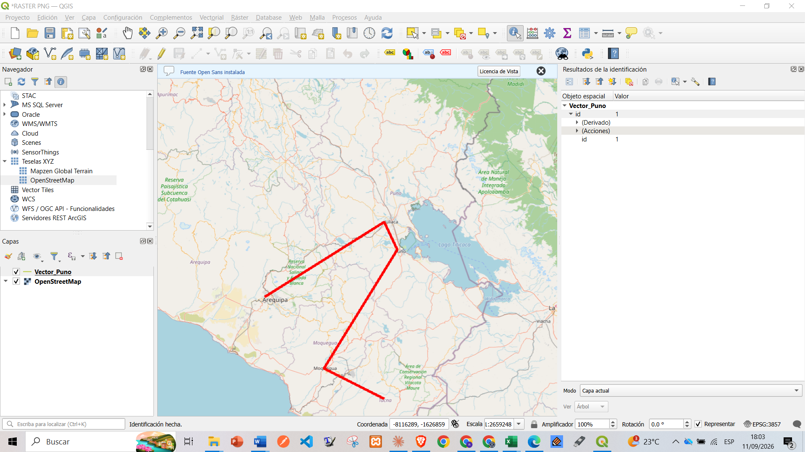
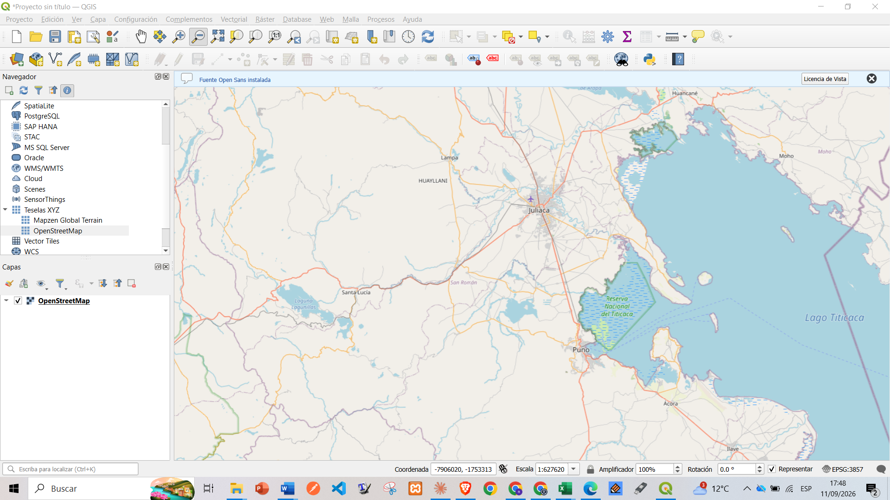
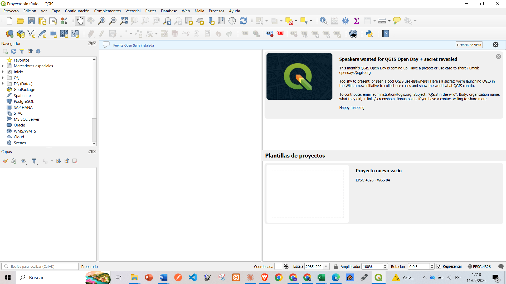

NURY MARGOT QUISPE CCALLO
Portafolio digital con mis trabajos académicos de estadística espacial: autocorrelación (I de Moran y LISA), patrones de puntos, geoestadística y manejo de capas en QGIS. Cada proyecto incluye su código en Python y sus resultados.
Resumen
Índice del vecino más cercano (NNI) y densidad de Kernel (KDE) para distinguir patrones agrupados, aleatorios y regulares.
Semivariograma experimental e interpolación continua (RBF) a partir de estaciones de muestreo.
Matrices de pesos Queen, I de Moran global y clústeres locales LISA (High-High, Low-Low).
Trabajos

Digitalización de la línea Vector_Puno (Arequipa – Juliaca – Puno – Moquegua – Tacna) sobre OpenStreetMap.

Carga de teselas XYZ de OpenStreetMap con la zona de Juliaca, Puno y la Reserva Nacional del Titicaca.

Configuración inicial del proyecto: navegador, panel de capas y sistema de referencia EPSG:4326 – WGS 84.
Contacto
Estudiante de Ingeniería Estadística e Informática, Universidad Nacional del Altiplano – Puno.